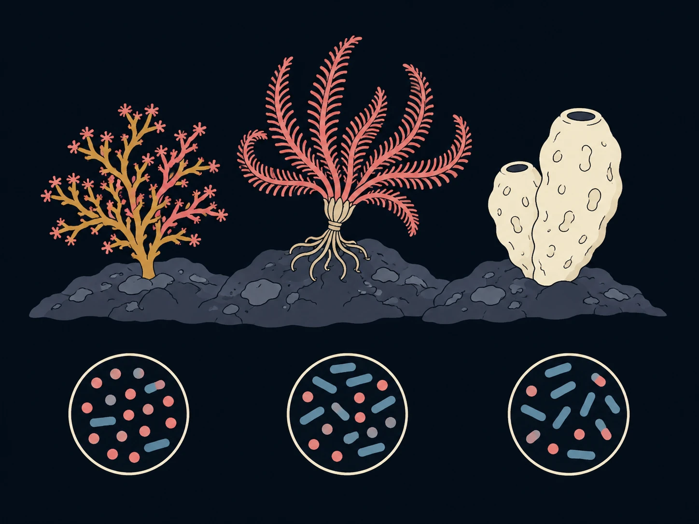
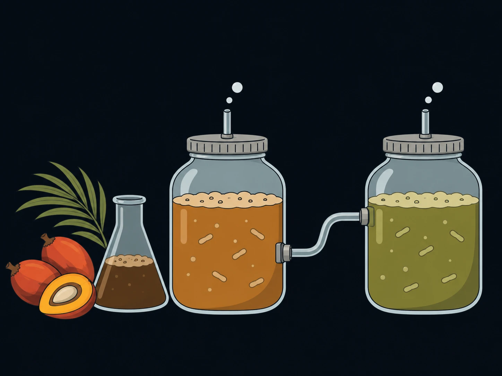

Research
How do microbes obtain and cycle carbon, nitrogen and phosphorus, and what does that mean for the organisms and ecosystems around them? This has been the underlying question throughout his career, from fermenters in Rio de Janeiro to sponges on the deep seafloor and now to farm soils, with genomics, stable isotopes and machine learning as the shared toolkit. The papers are grouped below by the stage of the career that produced them and the question each one answered.
How do soils keep carbon, nitrogen and phosphorus under climate extremes?
Soils rarely receive water and nutrients at a steady rate. They arrive in pulses, a rain event after a dry spell, a fertiliser application, a flush of root exudate, and the microbes that respond first shape how much carbon the soil keeps and how much it loses as CO₂. At the University of Sydney he runs incubation experiments that add ¹³C labelled substrates to soil either as pulses or as a constant supply, then follows the label into microbial biomass and storage compounds and back out as respired CO₂, while sequencing the communities that respond.
The students he jointly supervises carry the same questions into nutrient storage and competition in a pulse driven arid ecosystem, into how communities regulate their biomass carbon to phosphorus ratio, and into the rhizosphere of chickpea and its rhizobia. The results of these experiments are still being analysed, and the first papers from the soil work are in preparation.
How do we get from raw reads to answers?
Since joining the University of Sydney in 2025 he has written the pipelines his students and collaborators needed, then released them so other groups can use them. HiFiTaxa and AmplinkOne are postdoctoral work. Research groups in Australia, Denmark, Saudi Arabia, Brazil and Sweden use pipelines he wrote. Each one is built to run the same way on a laptop and on a cluster, with the reference databases versioned so a result can be reproduced a year later.
-
HiFiTaxa
Under review Preprint on bioRxiv, under review at ISME Communications
A Nextflow pipeline that takes raw PacBio HiFi reads for the full length 16S rRNA gene or the fungal ITS region to taxonomy in a single command. It builds versioned references from current GTDB and UNITE releases and runs BLCA, naive Bayes, Emu and EMITS classifiers so their calls can be compared on the same samples. Benchmarked on mock communities and on holdout tests in the preprint.
-
AmplinkOne
Under review Under review at ISME Communications
A reproducible and modular R workflow that carries marker gene amplicon data through the downstream analysis, from ASV and taxonomy tables to community statistics and publication figures. Written with colleagues at the University of Sydney. The manuscript is under review and the code will be released with it.
PhD
How does life run without light?
Deep sea sponges live where no light reaches and little food arrives. The PhD asked how their microbial symbionts make this possible. The answer, across four papers, is a community built around ammonia oxidising archaea that turn host ammonia into energy and fixed carbon, alongside heterotrophs that break down carbon too tough for most organisms, with viruses and metabolite exchange tying the partners together.
-
Ammonia oxidation and recalcitrant carbon degradation fuel mixotrophic growth in the symbiont community of a deep-sea sponge
Published N. Garritano, A et al. Microbiome 14, 153 (2026)
Metagenomics, metatranscriptomics and isotope labelling of the deep sea sponge Calyx sp. Heterotrophs break down tough algal polysaccharides from marine snow while two ammonia oxidising archaea fix carbon worth about a fifth of the sponge’s body carbon a year. The community is mixotrophic.
-
Simple Porifera holobiont reveals complex interactions between the host, an archaeon, a bacterium, and a phage
Published N. Garritano, A et al. The ISME Journal 18, wrae197 (2024)
The glass sponge Aphrocallistes beatrix hosts one archaeon and one bacterium, the simplest sponge holobiont reported. The archaeon runs on sponge ammonia and feeds the bacterium fumarate, and a virus that lyses the archaeon supplies the vitamin B12 the bacterium cannot make. Covered by BBC News.
-
Species-specific relationships between deep sea sponges and their symbiotic Nitrosopumilaceae
Published N. Garritano, A et al. The ISME Journal 17, 1517–1519 (2023)
In three deep sea sponge genera, ammonia oxidising archaea make up at least three quarters of the microbial community, so these holobionts can fix carbon in the dark. Each sponge species carries its own archaeal lineage, which points to vertical transmission. Cited in an international patent application.
-
Symbiotic Ammonia Oxidation in the Marine Environment
Published Thomas T, N. Garritano, A. Annual Review of Marine Science 18, 409–427 (2026)
An invited review of ammonia oxidation by microbes living in or on marine animals, from sponges and corals to bivalves and crustaceans. It covers the dominance of Nitrosopumilaceae, the variation in rates between hosts, genomic adaptation to life in a host and the open questions.
Who are the symbionts and how are they related?
Deep sea expeditions off Brazil, where he was the only member of his group on board, started collaborations that continue today. These papers describe the symbiont lineages that recur across corals, crinoids and sponges, the names and genomes that pin down who they are, and the data released so that others can use them.

-
Putative promiscuous symbionts in deep-sea corals and crinoids may contribute to nitrogen cycling
Published Modolon F, N. Garritano, A et al. Microbiome 13, 234 (2025)
Deep sea corals and the crinoids that live on them share the same Endozoicomonadaceae and Nitrosopumilaceae symbionts. A new dominant species, Endozoicomonas promiscua, can reduce nitrate to ammonia, a possible feed for the archaea and a nitrogen cycling link across hosts.
-
The novel, wide-spread sponge-associated phylum Spongivicinota shows metabolic complementarity to its sister-phylum Latescibacterota
Published Allen MA, N. Garritano, A et al. ISME Communications 6, ycag317 (2026)
Seventeen genomes from deep sea sponges define Spongivicinota, a proposed phylum for a widespread clade known until now by placeholder names. Its members live mostly in sponges and corals beside their sister phylum Latescibacterota and specialise in degrading complex peptides.
-
Resolving the evolutionary duality of marine symbionts: redefining the genus Endozoicomonas and proposing Neoendozoicomonas gen. nov.
Published Modolon F, N. Garritano, A et al. ISME Communications 6, ycag123 (2026)
Phylogenomics across 63 genomes redraws the genera of the Endozoicomonadaceae, symbionts of corals, sponges, molluscs and fishes. Core proteome identity resolved genera best and splits Endozoicomonas into Endozoicomonas sensu stricto and the new genus Neoendozoicomonas.
-
Metagenome-assembled genomes and viral sequences from deep-sea sponges
In press Allen MA, N. Garritano, A et al. Scientific Data, in press (2026). No DOI yet
A data descriptor for the metagenome assembled genomes and viral sequences recovered from deep sea sponges during the PhD, released so that other groups can build on them.
How do microbiomes differ between hosts and places?
Not every microbiome is specific to its host, and not every host keeps the microbes it is given. These collaborative papers compare communities between coral species on the same seafloor, follow coral probiotics into sponges, isolate the bacteria living against algal cells inside coral tissue, and watch bacteria change their behaviour with the microalga they grow on.
-
Contrasting microbiomes in deep-sea scleractinian and octocoral species from the South Atlantic Ocean
Published Hill LJ, Damasceno T, N. Garritano, A et al. Sustainable Microbiology 3, qvag048 (2026)
Amplicon sequencing of stony corals and octocorals from 710 metres in the Campos Basin shows each species carrying a community distinct from the water and sediment around it. The octocoral Candidella imbricata had the most specialised microbiome, dominated by Endozoicomonadaceae.
-
Not only for corals: exploring the uptake of beneficial microorganisms for corals by sponges
Published Ribeiro B, N. Garritano, A et al. npj Biofilms and Microbiomes 10, 125 (2024)
A four week field trial gave coral probiotics to two sponge species. Related strains were enriched in Stylissa carteri, both microbiomes shifted, and the sponges stayed healthy and kept pumping, so treating nearby corals is unlikely to harm them.
-
Bacteria associated with the in hospite Symbiodiniaceae’s phycosphere
Published Hill LJ, Messias CSMA, Vilela CLS, N. Garritano, A et al. iScience 27, 109531 (2024)
A Percoll gradient enriches intact Symbiodiniaceae cells and their attached bacteria from Pocillopora damicornis tissue. Halieaceae, Flavobacteriaceae and Alcanivoraceae associate with the algal cells inside the host, opening the phycosphere within coral tissue to study.
-
Dual transcriptomics reveal commensal interactions between microalgae and phycosphere bacteria
Under review Roager L, Schostag M, Garritano A, Gram L, Egan S. bioRxiv (2026). Under review
Dual transcriptomics of two phycosphere bacteria grown with three microalgae. The bacterial transcriptomes changed with the host, and in co culture with the diatom Conticribra weissflogii a Maribacter sp. switched on polysaccharide degradation genes and grew on laminarin alone.
Where is carbon fixed across the tree of life?
Carbon fixation is the entry point of carbon into living matter, yet its distribution across bacteria and archaea had not been mapped at scale. He built hidden Markov models for the key enzymes of the six known pathways and screened 52,515 metagenome assembled genomes with them, then used the same models to find the pathways in the sponge symbionts above. The models are public as HMM_CFP on GitHub, and he is extending the approach with random forest classifiers trained on genome annotations.
-
Carbon fixation pathways across the bacterial and archaeal tree of life
Published N. Garritano, A, Song W, Thomas T. PNAS Nexus 1, pgac226 (2022)
Hidden Markov models screened 52,515 genomes and found carbon fixation pathways in 1,007 of them, including the reverse TCA cycle in phyla where it had not been recognised and a cycle thought to be archaeal in bacteria. Carbon fixation is far more widespread than the textbook picture.
Master’s
Can waste become fuel?
His master’s research used mixed microbial consortia to ferment palm oil mill effluent, the wastewater of palm oil extraction, into hydrogen and then methane, with decentralised energy for remote parts of Brazil as the aim. It is where he learned gas chromatography and how to follow carbon and energy through a microbial community, skills he still uses on soils today.

-
Palm oil mill effluent (POME) as raw material for biohydrogen and methane production via dark fermentation
Published N. Garritano, A, Faber MO, De Sá LRV, Ferreira-Leitão VS. Renewable and Sustainable Energy Reviews 92, 676–684 (2018)
A review of palm oil mill effluent as a feedstock for hydrogen and methane by dark fermentation, bringing together the microbiology, the process conditions and the reported yields, and the two stage approach that recovers methane from the spent medium.
-
Efficient biohydrogen production via dark fermentation from hydrolized palm oil mill effluent by non-commercial enzyme preparation
Published N. Garritano, A, De Sá LRV, Aguieiras ÉCG, Freire DMG, Ferreira-Leitão VS. International Journal of Hydrogen Energy 42, 29166–29174 (2017)
Hydrolysing the effluent with an enzyme preparation made in the laboratory from Ricinus communis, in place of a commercial enzyme, raised the hydrogen yield from dark fermentation of this wastewater.